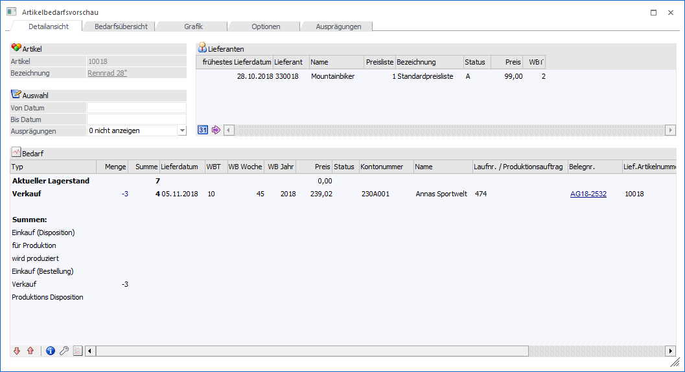
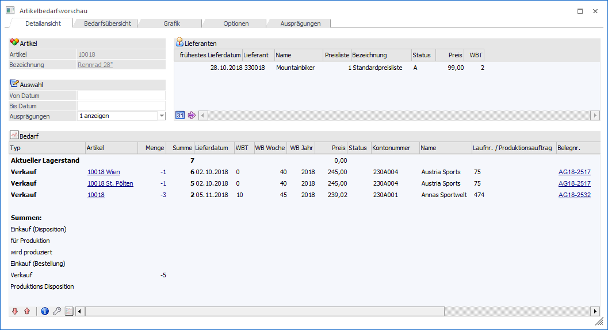

Die Anzeige in der Tabelle "Bedarf" ist unter anderem davon abhängig, ob es sich um einen Artikel mit Ausprägungen handelt. Bei Artikeln dieses Typs wird folgende Option im Kopf der Artikelbedarfsvorschau zur Verfügung gestellt:
Ø Ausprägungen
Bei Hauptartikeln mit Ausprägungen kann an dieser Stelle definiert werden, ob die Dispositionszeilen der einzelnen Ausprägungen mit angezeigt werden sollen oder nicht. Hierfür stehen die folgenden Einstellungen zur Verfügung:
ü 0 - nicht anzeigen
Die
Dispositionszeilen, welche nicht direkt für den Hauptartikel erfasst wurden,
werden nicht angezeigt.
ü 1 - anzeigen
Es werden alle
Dispositionszeilen, egal ob diese vom Hauptartikel oder einer seiner
Ausprägungen verursacht wurden, angezeigt. Für eine eindeutige Zuordnung wird
zusätzlich in der Tabelle "Bedarf" die Spalte "Artikel" eingeblendet.
Hinweis
Die gewählte Einstellung wird pro benutzerspezifisch gespeichert.
Achtung
Diese Einstellung beeinflusst neben der Tabellenanzeige auch die Errechnung der verfügbaren Menge in der "Artikelinfo" (nähere Informationen entnehmen Sie bitte dem Kapitel Artikel Matchcode).
Beispiel - Ausprägungsoption "0 - nicht anzeigen"

Es wird der aktuelle Lagerstand (7 Stück) ausgewiesen. Dieser beinhaltet in der Regel alle Lagerstände der Ausprägungen.
Zusätzlich wird eine Dispositionszeile des Typs "Verkauf" ausgewiesen. Diese Zeile wird angezeigt, da ein Auftrag (AG18-2532) direkt für den Hauptartikel "10018" (Menge 3 Stück) erfasst wurde.
Beispiel - Ausprägungsoption "1 - anzeigen"

Es wird der aktuelle Lagerstand (7 Stück) ausgewiesen. Dieser beinhaltet in der Regel alle Lagerstände der Ausprägungen.
Zusätzlich wird die Spalte "Artikel" zur Verfügung gestellt, welche angibt, von welchem Artikel der Bedarf entstanden ist.
In diesem Beispiel gibt es drei Dispositionszeilen des Typs "Verkauf". Hierbei stammt die Zeile für den Auftrag "AG18-2532" aus der direkten Erfassung des Hauptartikel "10018" (Menge 2 Stück) und bei dem Auftrag "AG18-2517" wurde die Ausprägung "10018 Wien" (1 Stück) bzw. "10018 St. Pölten" (1 Stück) erfasst.